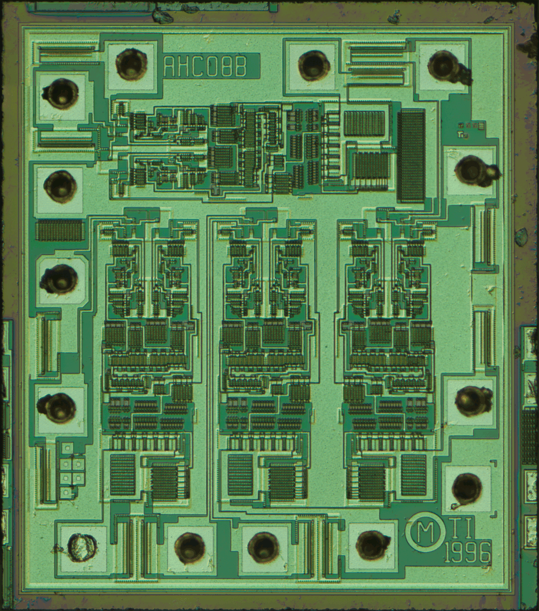
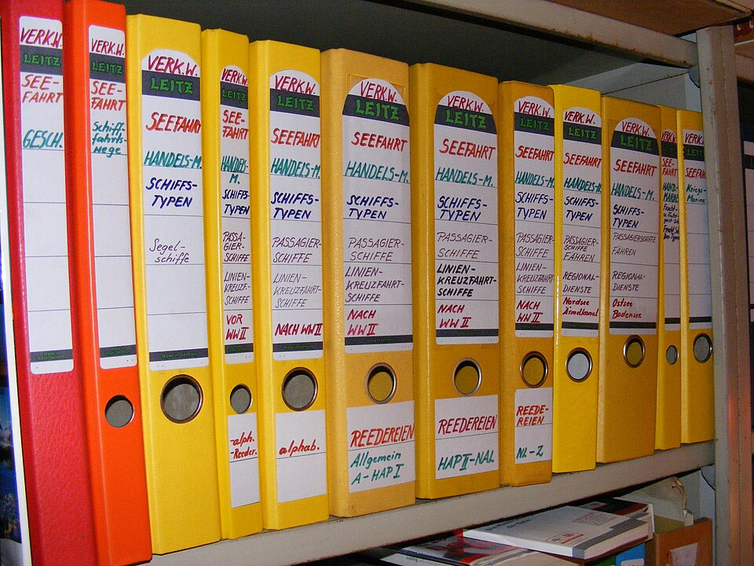

Kapa65
Kapa65
Good morning!
Nur das Schöne wird die Welt retten!
Fjodor Dostojewski
Nicht verzagen, Doc Alvers fragen!
Informatik — Grundkurs 11
Querbeet durch LB 1 und LB 2
Übung mit Anwendungsfällen — vom Von-Neumann-Rechner bis zur Quellenangabe
Nicht verzagen, Doc Alvers fragen!
Kapitel 01
Rechner und Digitalisierung
Generationen, Bits, Bildgrößen

Nicht verzagen, Doc Alvers fragen!
Wo wir stehen
Letzte Woche: Klassenarbeiten ausgewertet, Fehlertypen bestimmt
Heute: Übung an Anwendungsfällen quer durch Lernbereich 1 und 2
Leitfrage: Welches Wissen brauche ich, um einen echten Fall zu lösen?
Arbeitsweise: erst allein lösen, dann mit der Partnerin vergleichen
Nicht verzagen, Doc Alvers fragen!
Kurz wiederholt: Rechnergenerationen
| Generation | Schaltelement |
|---|---|
| 1. | Elektronenröhren |
| 2. | Transistoren |
| 3. | integrierte Schaltkreise |
| 4. | Mikroprozessoren |
Davor rechnete die Z3 mit Relais — schon binär
Von-Neumann-Prinzip: Programm und Daten liegen im selben Speicher
Röntgenbilder automatisch auswerten: angewandte Informatik (Medizininformatik)
Nicht verzagen, Doc Alvers fragen!
Fall: Wie groß ist das Foto?
| Schritt | Rechnung | Ergebnis |
|---|---|---|
| Bildpunkte | 800 × 600 | 480 000 |
| Byte je Punkt | 24 Bit : 8 | 3 Byte |
| Größe | 480 000 × 3 Byte | 1 440 000 Byte, rund 1,4 MB |
Typische Falle: 1 440 000 Bit — die Einheit gehört zur Antwort
Beim Scannen: Punkte pro Zoll sind die Abtastung, Graustufen je Punkt die Quantisierung
Nicht verzagen, Doc Alvers fragen!
Digitalisieren und deuten
Reihenfolge immer: abtasten, quantisieren, codieren
Mit 1 Bit je Bildpunkt gibt es nur Schwarz und Weiß
Daten werden gedeutet zu Information, verknüpfte Information wird zu Wissen
37,5 ist ein Datum — als Körpertemperatur wird es Information
Nicht verzagen, Doc Alvers fragen!
Kapitel 02
Informationen finden und prüfen
Quellen, Statistiken, Suchmaschinen
Nicht verzagen, Doc Alvers fragen!
Fälle zur Recherche
| Fall | beste Antwort | warum |
|---|---|---|
| aktuelle Schülerzahl der Schule | die Schulverwaltung | Primärquelle, führt die Zahlen selbst |
| 75 Prozent Zustimmung | Wie viele, wer befragt? | bei 4 Befragten sind es 3 Personen |
| erster Treffer der Suchmaschine | kein Qualitätsbeweis | Beliebtheit, Vorgeschichte, Bezahlung |
| Wann höre ich auf zu suchen? | bei Sättigung | neue Suchen bringen vor allem Bekanntes |
Die Schulwebsite kann veraltet sein, eine Klassenumfrage misst etwas anderes
Nicht verzagen, Doc Alvers fragen!
Quellen richtig angeben
Vollständig heißt: Autor oder Herausgeber, Titel, URL und Abrufdatum
Muster: Herausgeber: Titel. URL, abgerufen am TT.MM.JJJJ
Das Abrufdatum, weil sich Netzinhalte ändern
Autor und Titel machen die Angabe auch ohne Klick verständlich
So bleibt eure Arbeit überprüfbar
Nicht verzagen, Doc Alvers fragen!
Kapitel 03
Ordnen und veröffentlichen
Ablage, Metadaten, CMS, Recht am Bild

Nicht verzagen, Doc Alvers fragen!
Fälle zu Ablage und Veröffentlichung
| Fall | Problem oder Lösung |
|---|---|
| Team legt dieselbe Datei in drei Ordnern ab | Fassungen laufen auseinander, keine gilt — ein Ort, Verweise darauf |
| Dokument ohne Titel, Autor, Datum | kaum auffindbar — Metadaten machen es durchsuchbar |
| Aussehen der ganzen Schulwebsite ändern | CMS: Inhalt in der Datenbank, Gestaltung in Vorlagen |
| Klassenfoto auf die Schulwebsite | Einwilligung der Abgebildeten, bei Minderjährigen der Eltern |
| ständige Push-Meldungen | weniger Kanäle abonnieren, feste Lesezeiten |
Beim Foto zählt das Recht am eigenen Bild — die Fotografin entscheidet nur über das Foto als Werk
Nicht verzagen, Doc Alvers fragen!
Der rote Faden: Informationsmanagement
Zuerst den Bedarf klären — erst Kriterien festlegen, dann zählen oder suchen
Beispiel: Welche Schulrechner sind zu ersetzen? Kriterien wie Alter, Leistung, Update-Versorgung
Aufbereiten heißt: ordnen, zusammenfassen, verknüpfen, verständlich darstellen
Ertrag: die richtige Information zur richtigen Zeit am richtigen Ort
Nicht verzagen, Doc Alvers fragen!
Einen Fall löst man, indem man zuerst die Frage klärt, sie dem passenden Fachbegriff zuordnet und die Antwort begründet — mit Einheit beim Rechnen und Abrufdatum bei der Quelle.
Merksatz
Nicht verzagen, Doc Alvers fragen!
Fun Facts
Den ersten integrierten Schaltkreis baute Jack Kilby 1958 — dafür bekam er im Jahr 2000 den Physik-Nobelpreis
Das Von-Neumann-Prinzip steht in einem Bericht von 1945 über den Rechner EDVAC
Gordon Moore sagte 1965 voraus, dass sich die Zahl der Bauteile auf einem Chip regelmäßig verdoppelt
Nicht verzagen, Doc Alvers fragen!
Eure Aufgabe
Stationen: an jeder Station ein Fall — allein lösen, dann mit der Partnerin vergleichen
Rechnen: Wie groß ist ein Graustufenbild mit 1024 × 768 Bildpunkten und 8 Bit je Punkt?
Individuelle Förderung: eure Fehlertypen aus der Klassenarbeit gezielt üben
PC-Kabinett: für eine Webseite eurer Wahl eine vollständige Quellenangabe schreiben
Zum Schluss: Aufgaben (20) auf der Planseite — Lösung pro Aufgabe zum Aufklappen
Nicht verzagen, Doc Alvers fragen!